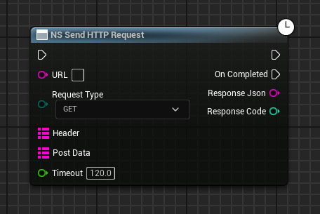
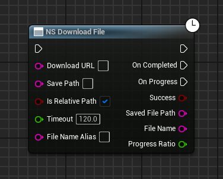
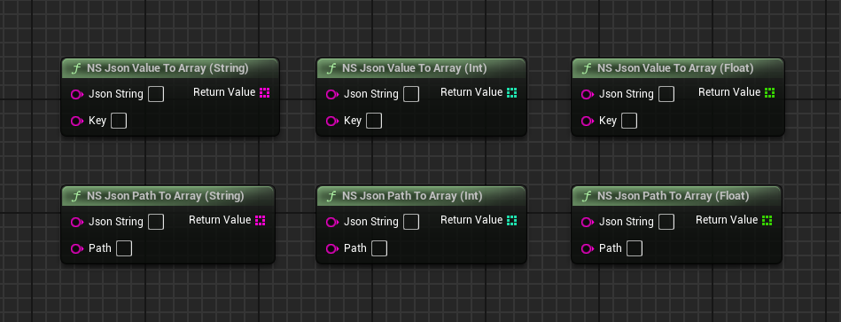
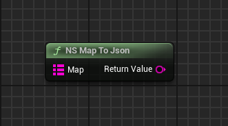
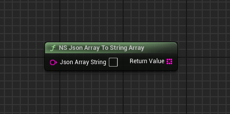

🛠️ NS_HttpJson Plugin Usage Guide
Welcome to this plugin! Below is a detailed explanation of the Blueprint nodes to help you quickly integrate UE communication features.
Generic HTTP Request Node Details (NS Send HTTP Request)
This is a versatile HTTP request node supporting various request types like GET, POST, custom Headers, and request body data.
Blueprint Node Example:
Input Parameters (Input) - Left Pins
| Parameter Name | Data Type | Description |
|---|---|---|
| Execution Pin (Top) | Exec | **Triggers** the start of the HTTP request. |
| URL | String | **Required:** The full URL address of the target Web server. |
| Request Type | Enum | Selects the request method, supporting common HTTP methods like **GET**, **POST**, **PUT**, and **DELETE**. |
| Header | Map<String, String> | Optional: Used to set custom HTTP headers, such as `Content-Type` or `Authorization`. |
| Post Data | String | Used to carry the request body content (Payload), typically a JSON string, when the
Request Type is POST or PUT.
|
| Timeout | Float | Request timeout duration in seconds. Default is 120.0 seconds. |
Output Parameters (Output) - Right Pins
| Parameter Name | Data Type | Description |
|---|---|---|
| On Completed | Exec | Execution pin triggered when the HTTP request is **finished** (whether successful or failed). |
| Response Json | String | The raw response content returned by the server, typically a JSON format string. |
| Response Code | Integer | The HTTP status code returned by the server (e.g., 200 for success, 404 for not found). |
File Download Node Details (NS Download File)
This node is used to download files from a specified URL, supporting progress tracking, relative path settings, and timeout control.
Blueprint Node Example:
Input Parameters (Input) - Left Pins
| Parameter Name | Data Type | Description |
|---|---|---|
| Execution Pin (Top) | Exec | **Triggers** the file download task to start. |
| Download URL | String | **Required:** The complete download link (HTTP or HTTPS) for the file. |
| Save Path | String | **Required:** The directory or full path where the downloaded file will be saved. |
| Is Relative Path | Boolean | Checked (True) means Save Path is relative to the game's root directory; unchecked (False)
means it is an absolute path. |
| Timeout | Float | Request timeout duration in seconds. Default is 120.0 seconds. The task fails if not completed within this time. |
| File Name Alias | String | Optional: Specifies a **new file name** for the downloaded file, overriding the original file name from the URL. |
Output Parameters (Output) - Right Pins
| Parameter Name | Data Type | Description |
|---|---|---|
| On Completed | Exec | Execution pin triggered when the file download task is finished (whether successful or failed). |
| On Progress | Exec | **Continuously triggers** during file download to update the progress bar. |
| Success | Boolean | Boolean value indicating whether the file was **successfully** downloaded. |
| Saved File Path | String | The **complete absolute path** where the file was finally saved. |
| File Name | String | The final name of the downloaded file (may be the Alias). |
| Progress Ratio | Float | The current download progress ratio, ranging from **0.0 to 1.0**. |
File Upload Node Details (NS Upload File)
This node is dedicated to uploading local files to a Web server using multipart form data. It supports progress tracking, custom Headers, and additional form data.
Blueprint Node Example:

Input Parameters (Input) - Left Pins
| Parameter Name | Data Type | Description |
|---|---|---|
| Execution Pin (Top) | Exec | **Triggers** the file upload task to start. |
| Upload URL | String | **Required:** The API address on the server side that receives the file upload. |
| File Path | String | **Required:** The full absolute or relative path of the local file to be uploaded. |
| File Field Name | String | **Required:** The form field name used by the server to identify the file part (e.g., `file` or `my_asset`). |
| Header | Map<String, String> | Optional: Used to add custom HTTP headers, such as an authentication Token. |
| Post Data | Map<String, String> | Optional: **Additional form data** (e.g., User ID, file description) to be sent along with the file in the request. |
| Is Relative Path | Boolean | Checked (True) means File Path is relative to the game's root directory. |
| Timeout | Float | Request timeout duration in seconds. |
Output Parameters (Output) - Right Pins
| Parameter Name | Data Type | Description |
|---|---|---|
| On Completed | Exec | Execution pin triggered when the file upload task is **finished** (successful or failed). |
| On Progress | Exec | **Continuously triggers** during file upload for progress bar updates. |
| Success | Boolean | Boolean value indicating whether the file was **successfully** uploaded. |
| Response Content | String | The raw response content returned by the server (typically JSON feedback on the upload result). |
| Response Code | Integer | The HTTP status code returned by the server. |
| Progress Ratio | Float | The current upload progress ratio, ranging from **0.0 to 1.0**. |
JSON Data Type Conversion Node Details (NS Json Value To [Type])
This group of nodes extracts the value corresponding to a key (Key) from a raw JSON string and automatically converts it to the required basic data type for Blueprint, making it a core tool for processing server responses.
Blueprint Node Example:
![NS Json Value To [Type] Blueprint Node Group Screenshot](getvalue.png)
Common Input Parameters (Input) - Applies to all four nodes
| Parameter Name | Data Type | Description |
|---|---|---|
| Json String | String | **Required:** The JSON string to be parsed. Usually connected from the Response Content
output of an HTTP request node. |
| Key | String | **Required:** The key name whose corresponding value you want to extract from the JSON string (e.g., to
get the value from {"user_id": 123}, the Key is `user_id`). |
Output Parameters (Output) - Return Values for Each Node
| Node Name | Return Type | Description |
|---|---|---|
NS Json Value To String |
String | Extracts the value corresponding to the specified Key and converts it to a **string**. |
NS Json Value To Int |
Integer | Extracts the value corresponding to the specified Key and converts it to an **integer**. Suitable for IDs, counts, etc. |
NS Json Value To Float |
Float | Extracts the value corresponding to the specified Key and converts it to a **float**. Suitable for prices, coordinates, etc. |
NS Json Value To Bool |
Boolean | Extracts the value corresponding to the specified Key and converts it to a **Boolean** (True/False). Suitable for status flags. |
JSON Path Deep Data Extraction Node Details (NS Json Path To [Type])
This group of nodes is an advanced JSON parsing utility, allowing you to access deeply nested data within the JSON structure directly using **dot notation (Path)**, simplifying complex JSON processing.
Blueprint Node Example:
![NS Json Path To [Type] Blueprint Node Group Screenshot](getvalue2.png)
Common Input Parameters (Input) - Applies to all four nodes
| Parameter Name | Data Type | Description |
|---|---|---|
| Json String | String | **Required:** The JSON string to be parsed. Usually connected from the Response Content
output of an HTTP request node. |
| Path | String | **Required:** The JSON path expressed using dot notation. For example, to get the name from
{"user": {"info": {"name": "Test"}}}, the Path should be `user.info.name`.
|
Output Parameters (Output) - Return Values for Each Node
| Node Name | Return Type | Description |
|---|---|---|
NS Json Path To String |
String | Extracts the value based on Path and converts it to a **string**. |
NS Json Path To Int |
Integer | Extracts the value based on Path and converts it to an **integer**. |
NS Json Path To Float |
Float | Extracts the value based on Path and converts it to a **float**. |
NS Json Path To Bool |
Boolean | Extracts the value based on Path and converts it to a **Boolean**. |
Return Value |
(Corresponding Type) | The final value returned upon successful parsing. |
JSON Array Extraction Node Details (NS Json Value/Path To Array)
This group of nodes handles array data within a JSON structure. Whether using a simple key or a deep path, they convert the data into Blueprint array variables, supporting String, Int, and Float array types.
Blueprint Node Example:
Input Parameters (Input) - General
| Parameter Name | Applicable Nodes | Data Type | Description |
|---|---|---|---|
| Json String | All | String | **Required:** The JSON string containing the target array data. |
| Key | Value To Array (Top row) | String | **Required:** The direct key name of the target array in the JSON. |
| Path | Path To Array (Bottom row) | String | **Required:** The JSON Path using dot notation, pointing to the location of the target array (e.g.,
data.scores.list).
|
Output Parameters (Output) - Return Values for Each Node
| Node Name | Return Type | Description |
|---|---|---|
NS Json Value To Array (String) |
String Array | Extracts the array based on Key and converts all elements to a **String Array**. |
NS Json Value To Array (Int) |
Integer Array | Extracts the array based on Key and converts all elements to an **Integer Array**. |
NS Json Value To Array (Float) |
Float Array | Extracts the array based on Key and converts all elements to a **Float Array**. |
NS Json Path To Array (String) |
String Array | Extracts the array based on Path and converts all elements to a **String Array**. |
NS Json Path To Array (Int) |
Integer Array | Extracts the array based on Path and converts all elements to an **Integer Array**. |
NS Json Path To Array (Float) |
Float Array | Extracts the array based on Path and converts all elements to a **Float Array**. |
- This group of nodes is designed specifically for handling JSON arrays (e.g., `"scores": [10, 20, 30]`).
- If the Key/Path exists but the corresponding value is not an array, or if type conversion fails, the node returns an **empty array**.
JSON Data Construction Node Details (NS Map To Json)
This node is the core tool for JSON creation. It efficiently serializes a Blueprint **Map<String, String>** structure into a JSON format string suitable for the request body of POST or PUT requests for data submission.
Blueprint Node Example:
Input Parameters (Input) - Left Pins
| Parameter Name | Data Type | Description |
|---|---|---|
| Map | Map<String, String> | **Required:** The Map variable containing key-value pairs. The Map's Key becomes the JSON field name, and the Value becomes the JSON field value. |
Output Parameters (Output) - Right Pins
| Parameter Name | Data Type | Description |
|---|---|---|
| Return Value | String | Returns the serialized JSON format string. |
- If you input a Map:
{"user_id": "101", "score": "95.5"} - The node will output the JSON string:
{"user_id": "101", "score": "95.5"}
JSON Array String Conversion Node Details (NS Json Array To String Array)
This node handles specialized JSON array strings. It directly converts a JSON array containing pure string
elements (e.g., ["key1", "key2", "key3"]) entirely into a String Array variable in Blueprint.
Blueprint Node Example:
Input Parameters (Input) - Left Pins
| Parameter Name | Data Type | Description |
|---|---|---|
| Json Array String | String | **Required:** The string containing the JSON format array. Note: The string must be a valid array structure enclosed by `[` and `]`. |
Output Parameters (Output) - Right Pins
| Parameter Name | Data Type | Description |
|---|---|---|
| Return Value | String Array | Returns the converted **String Array**. If the input is invalid or improperly formatted, an empty array is returned. |
- Suitable for specialized APIs where the server returns a raw array string without an encapsulating key.
- Example Input:
["apple", "banana", "cherry"].
JSON Array Construction Node Details (NS [Type] Array To Json)
This group of nodes quickly converts various Blueprint array types (String, Int, Float) into JSON array strings. It is the ideal choice for constructing complex array structures (e.g., batch IDs, score lists) when uploading data.
Blueprint Node Example:

Input Parameters (Input) - Applies to all three nodes
| Parameter Name | Data Type | Description |
|---|---|---|
| String Array | String Array | **Required:** The String Array to be converted to a JSON string (for `NS String Array To Json` only). |
| Int Array | Integer Array | **Required:** The Integer Array to be converted to a JSON string (for `NS Int Array To Json` only). |
| Float Array | Float Array | **Required:** The Float Array to be converted to a JSON string (for `NS Float Array To Json` only). |
Output Parameters (Output) - Return Values for Each Node
| Node Name | Return Type | Description |
|---|---|---|
NS String Array To Json |
String | Returns the String Array serialized into a JSON string (e.g., ["item1", "item2"]). |
NS Int Array To Json |
String | Returns the Int Array serialized into a JSON string (e.g., [10, 20, 30]). |
NS Float Array To Json |
String | Returns the Float Array serialized into a JSON string (e.g., [1.5, 2.5]). |
- The return value (JSON String) from these nodes is typically nested as a sub-value within the **Map**
input of the
NS Map To Jsonnode to build complex request bodies. - For example, the string generated by
NS String Array To Jsoncan be sent as a Value for a specific field in the Map.
By understanding the function of each pin, you can control data flow and error handling more precisely.